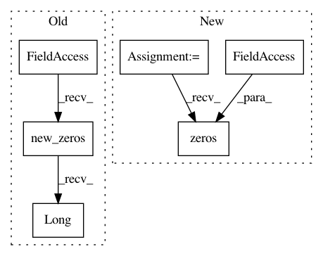

f038b1aa3fd670b406d7ad6898a613e4870c6c60,layers/tacotron.py,Decoder,_init_states,#Decoder#Any#,346
Before Change
// decoder states
self.attention_rnn_hidden = self.attention_rnn_init(
inputs.data.new_zeros(B).long())
self.decoder_rnn_hiddens = [
self.decoder_rnn_inits(inputs.data.new_tensor([idx] * B).long())
for idx in range(len(self.decoder_rnns))
After Change
// decoder states
self.attention_rnn_hidden = torch.zeros(B, 256, device=inputs.device)
self.decoder_rnn_hiddens = [
torch.zeros(B, 256, device=inputs.device)
for idx in range(len(self.decoder_rnns))
]
self.current_context_vec = inputs.data.new(B, self.in_features).zero_()
// attention states
In pattern: SUPERPATTERN
Frequency: 3
Non-data size: 6
Instances
Project Name: mozilla/TTS
Commit Name: f038b1aa3fd670b406d7ad6898a613e4870c6c60
Time: 2019-07-21
Author: egolge@mozilla.com
File Name: layers/tacotron.py
Class Name: Decoder
Method Name: _init_states
Project Name: mozilla/TTS
Commit Name: 8d3775a7d695cea3bc398eb3e84da9606184299a
Time: 2019-09-23
Author: egolge@mozilla.com
File Name: layers/tacotron2.py
Class Name: Decoder
Method Name: _init_states
Project Name: mozilla/TTS
Commit Name: 8d3775a7d695cea3bc398eb3e84da9606184299a
Time: 2019-09-23
Author: egolge@mozilla.com
File Name: layers/tacotron2.py
Class Name: Decoder
Method Name: get_go_frame